Draws ternary plots of the fitted composition effect of a comp_iv() fit,
one per part triplet (choose(D, 3) panels for a D-part composition), as
tiles of the computed values (default) or as a smoothed heatmap. The parts
outside the triplet are held at the reference composition, the sample's
closed geometric mean.
Arguments
- x
A
comp_ivobject fromcomp_iv().- scale
Effect scale of the surface:
"relative"(default) for the effect versus the reference composition, or"absolute"for the predicted response."absolute"is unavailable for the survival, ordinal and multinomial engines.- resolution
Number of steps along each edge of a triplet's simplex, a whole number of at least 3 (default 40). The grid holds the
choose(resolution - 1, 2)compositions whose three shares are positive multiples of1 / resolutionof the triplet's total (741 at the default), one tile each. Only those inside thequantilesband are evaluated, on a fewemmeansreference grids per panel. A grid of fewer than about 10 steps gives a very coarse mosaic and may leave a panel empty under the defaultquantiles.- quantiles
The band of each part's observed distribution within which tiles are drawn: two probabilities in increasing order, by default
c(0.05, 0.95), the 5th to 95th percentiles.NULLdraws the whole triangle, evaluating every grid composition.- smooth
FALSE(default) draws one tile per computed composition;TRUEdraws a quadratic surface fitted through the computed compositions as a smoothed heatmap.- category
For a multinomial (
"mblogit") fit, the non-reference outcome level whose relative risk ratio against the reference level is drawn: required for such a fit, and refused for any other.NULL(default).- ...
Present for S3 consistency.
plot()takes no further arguments, and one given here is an error.
Value
Invisibly, a ggplot object built with ggtern for a three-part
composition, otherwise a list of them named by triplet ("MVPA.LPA.SB").
The plots are drawn as a side effect.
Details
Each panel evaluates the fit on a grid of compositions over its triplet
through the same emmeans computation as predict_realloc(), averaged over
the covariates:
scale = "relative"(default)Each grid composition is contrasted against the reference composition, so the surface is the reallocation effect measure: an odds ratio (logistic), hazard ratio (survival), rate ratio (Poisson) or mean difference (identity link). The reference composition itself maps to
1(ratio scales) or0(difference scale).scale = "absolute"The predicted response (probability, mean or rate) at each grid composition.
The survival engines ("cox", "coxme") estimate no baseline hazard, and
the ordinal and multinomial engines ("clm", "clmm", "mblogit") predict
per outcome category. These engines support scale = "relative" only, as in
predict_realloc(), and scale = "absolute" is an error for them. An
ordinal surface is the cumulative odds ratio versus the reference
composition. A multinomial surface is the relative risk ratio of the outcome
level named by category against the reference level.
By default (smooth = FALSE), each tile is one computed composition filled
with its own predicted value, without interpolation, and predict_realloc()
gives the same values as a table.
With smooth = TRUE, each panel shows a quadratic surface fitted through the
computed cells in the triplet's two isometric log-ratio coordinates. The fit
is made on the model's link scale (the log for a ratio) and mapped back. Its
values are drawn as finer tiles inside the same band, without contour lines.
The lattice refines the computed grid by the largest whole factor, up to 4,
that keeps it at or under 80 steps. At a resolution of 40 or below the
lattice is finer than the grid, and from 41 up it is the grid itself. The
computed cells stay in each panel's data under the smooth, and
predict_realloc() gives them exactly. The legend spans the computed values,
and a smoothed tile beyond them takes the end colour. A panel keeps its tiles
and warns when the quadratic cannot be fitted, which happens with fewer than
12 usable computed cells, a constant surface or a degenerate arrangement of
compositions.
In both pictures, the border strip of the triangle, where a part would be near zero, is left blank, and a black point marks the reference composition.
The surface is drawn only where the sample has data. A tile is kept when each
of its three triplet parts lies within that part's quantiles band over the
observed compositions (by default its 5th to 95th percentile). Tiles outside
are left blank, the axes keep the whole triangle, and the held parts, at the
reference composition (ref_comp of the fit), are not filtered. A panel
carries no caption; on a fit with include_total = TRUE, the total is held
at total_ref.
On a fit with a composition-by-covariate interaction (a moderator), the
surface is marginal over the interacting covariate: factor levels are
averaged with equal weight, and numeric covariates are held at their mean. A
message says so once and names the covariate, and predict_realloc() with
by gives the effect within each level.
See also
comp_iv() to fit the model; summary.comp_iv() for the effect
table; predict_realloc() for the reallocation table the surface draws.
Other composition as predictor:
comp_iv(),
summary.comp_iv()
Examples
# \donttest{
cd <- declare_composition(timeuse, c("MVPA", "LPA", "SB", "SPT"),
closure = 1440)
m <- comp_iv(cd, outcome = "obesity", model = "glm", family = "binomial")
plot(m) # odds ratio versus the reference composition
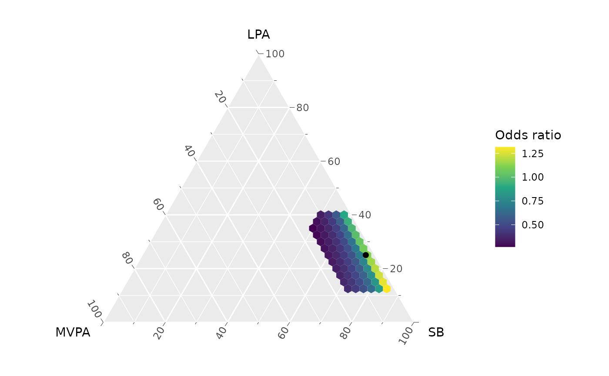
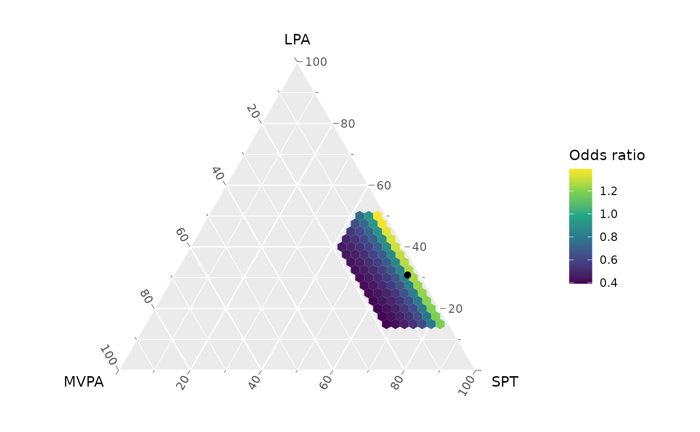
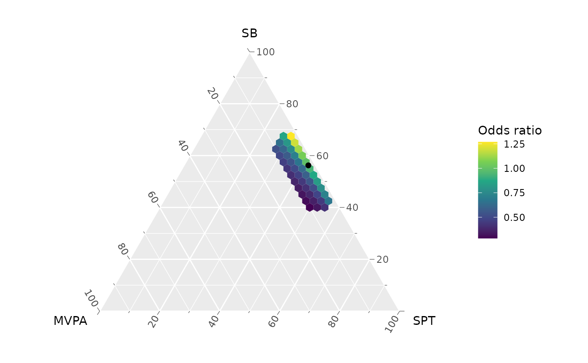
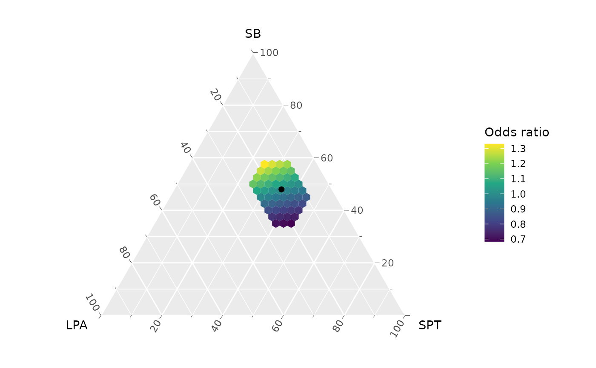
plot(m, scale = "absolute") # predicted probability
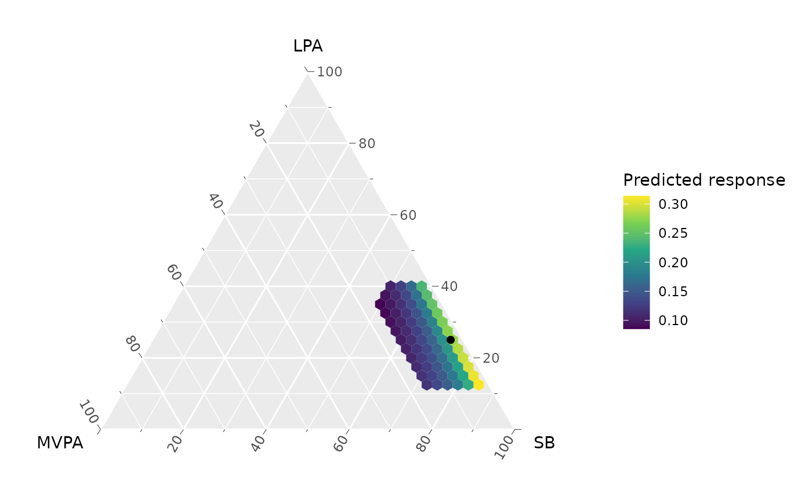
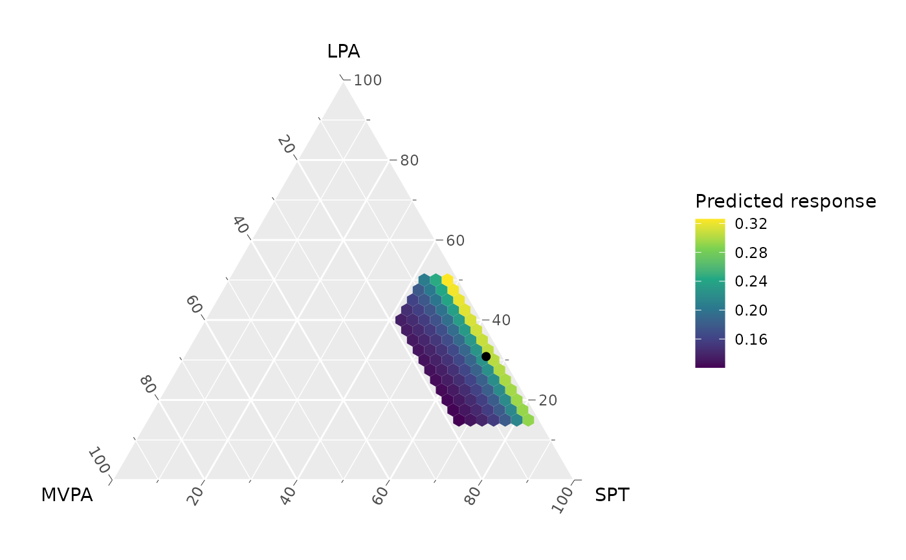
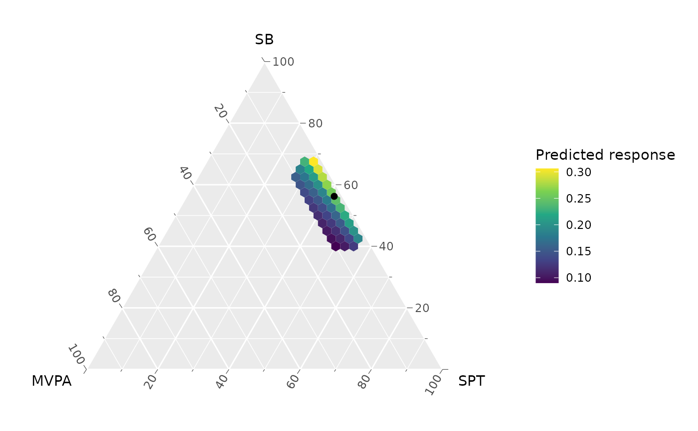
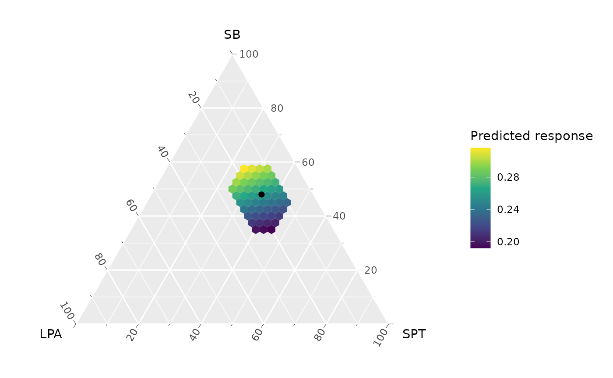
plot(m, smooth = TRUE) # a quadratic surface through the tiles
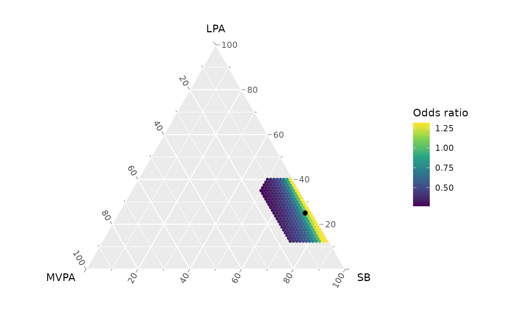
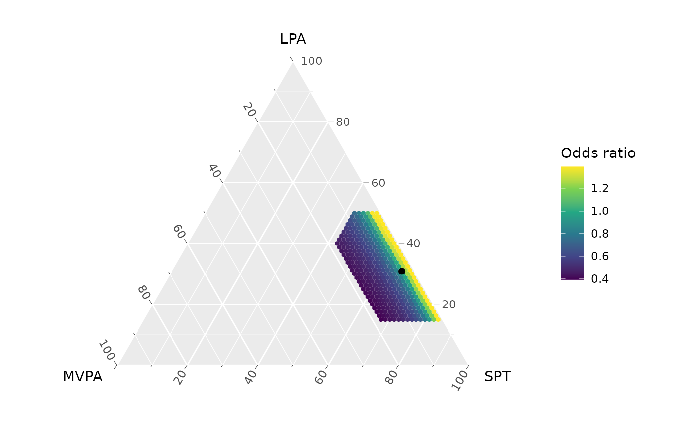
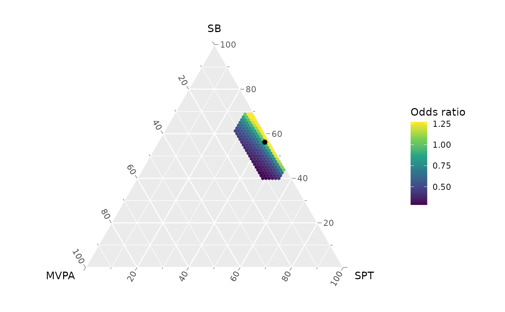
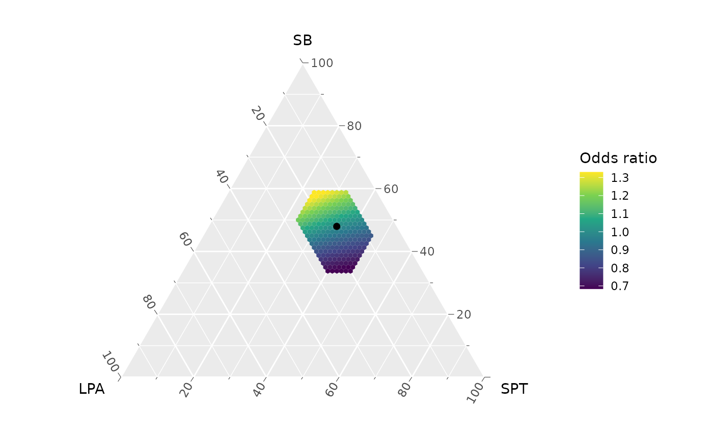
if (requireNamespace("ordinal", quietly = TRUE)) {
ord <- comp_iv(cd, outcome = "grade", model = "clm")
plot(ord) # cumulative odds ratio
}
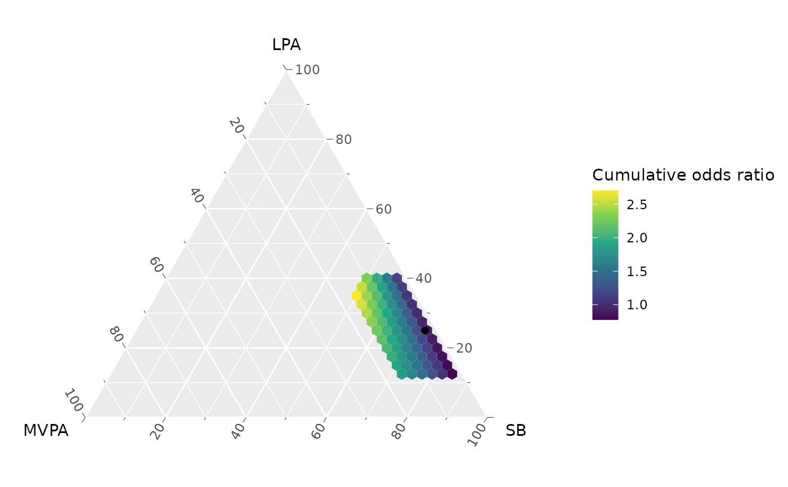
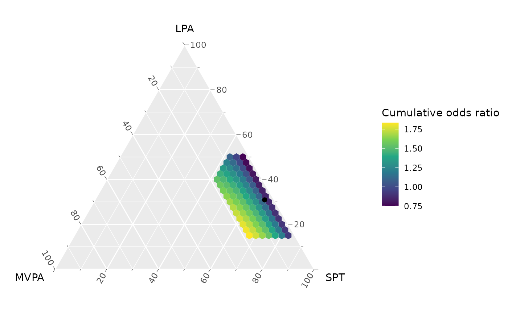
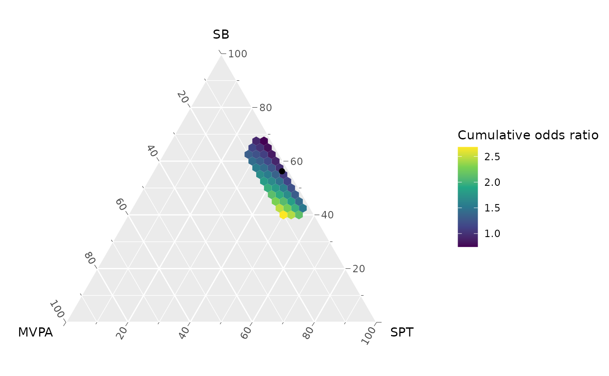
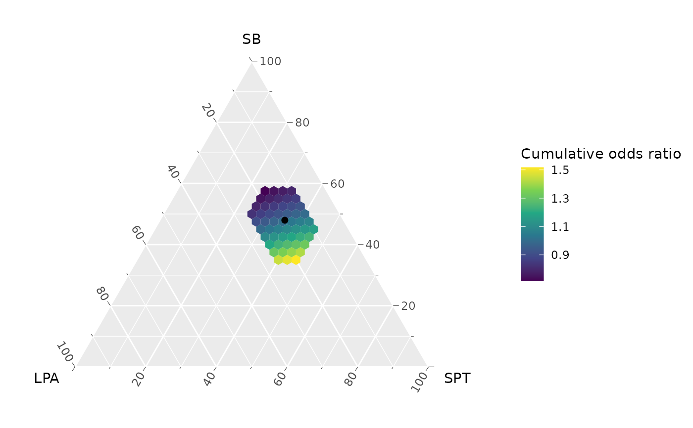
# }